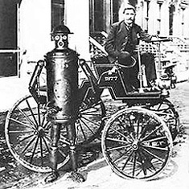
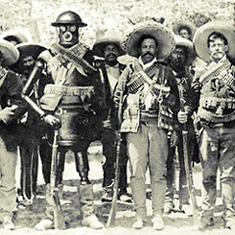

Boilerplate war ein Roboter, der von Professor Archibald Campion um 1880 herum gebaut wurde, und zum ersten Mal 1893 bei der kolumbianischen Weltaustellung der Öffentlichkeit vorgestellt wurde. Ursprünglich wurde Boilerplate als Soldat konzipiert, der Konflikte zwischen Nationen lösen sollte. Boilerplate konnte diese Fähigkeiten manchmal bei militärischen Auseinandersetzungen demonstrieren. Um 1895 herum nahm Boilerplate an einer Expedition in die Antarktis teil. 1901 reiste Boilerplate um den Erdball, scheiterte aber bei dem Versuch seine industriellen Fähigkeiten bekannt zu machen. Boilerplate ist eine der größten Ironien, eine Meisterleistung, die weithin unbekannt geblieben ist. In einem Zeitalter, welches das Automobil und Flugzeug hervorbrachte, hätte einem funktionierendem, mechanischen Mann mehr Respkt gebührt!!!(Paul Guinan, 2000)